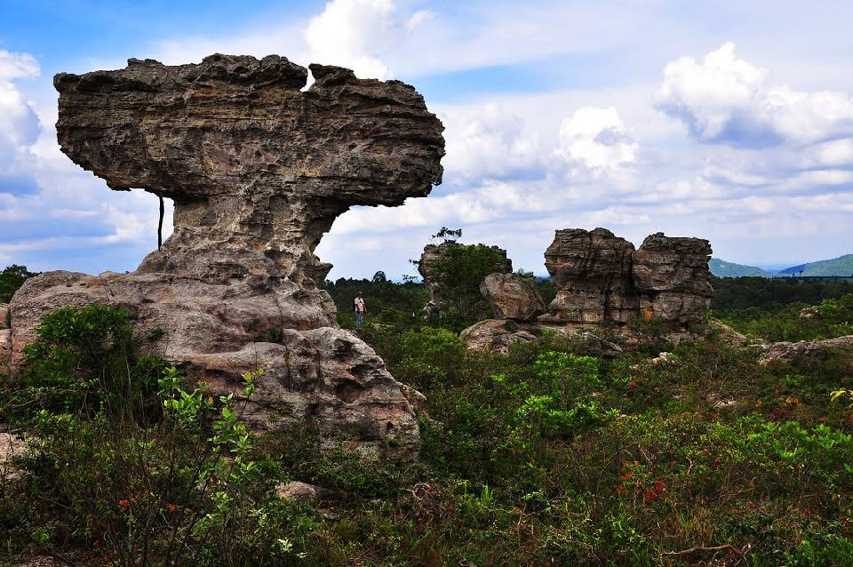

ตั้งอยู่บนเทือกเขาพังเหย ภูมิประเทศเป็นเนินเขาสลับซับซ้อน ระดับความสูงประมาณ 200-800 เมตรจากระดับน้ำทะเล มีความหลากหลายของระบบนิเวศและมีไม้ดอกจำพวกดุสิตา เอนอ้า และกล้วยไม้ ขึ้นอยู่จำนวนมาก จุดท่องเที่ยวในเขตอุทยาน ได้แก่ ลานหินงาม เป็นบริเวณที่มีโขดใหญ่รูปร่างแปลก ๆ กระจายอยู่เต็มไปหมดในเนื้อที่กว่า 10ไร่ เกิดจากการกัดเซาะของเนื้อดินและหินเป็นรูปลักษณ์แตกต่างกัน สามารถจินตนาการเป็นรูปต่าง ๆ เช่น หินรูปตะปู รูปเรด้าร์ รูปแม่ไก่ รูปถ้วยฟีฟ่า ฯลฯ ทุ่งดอกกระเจียว หรือ ทุ่งบัวสวรรค์ เหมาะ มาเที่ยวชมในช่วงฤดูฝนประมาณเดือนมิถุนายน-สิงหาคม บนท้องทุ่งหญ้าเพ็กสีเขียวจะมีดอกกระเจียวสีชมพูอมม่วงขึ้นแซมอยู่ทั่วไป มองดูสวยงามมาก ห่างจากที่ทำการอุทยานประมาณ 1 กิโลเมตร